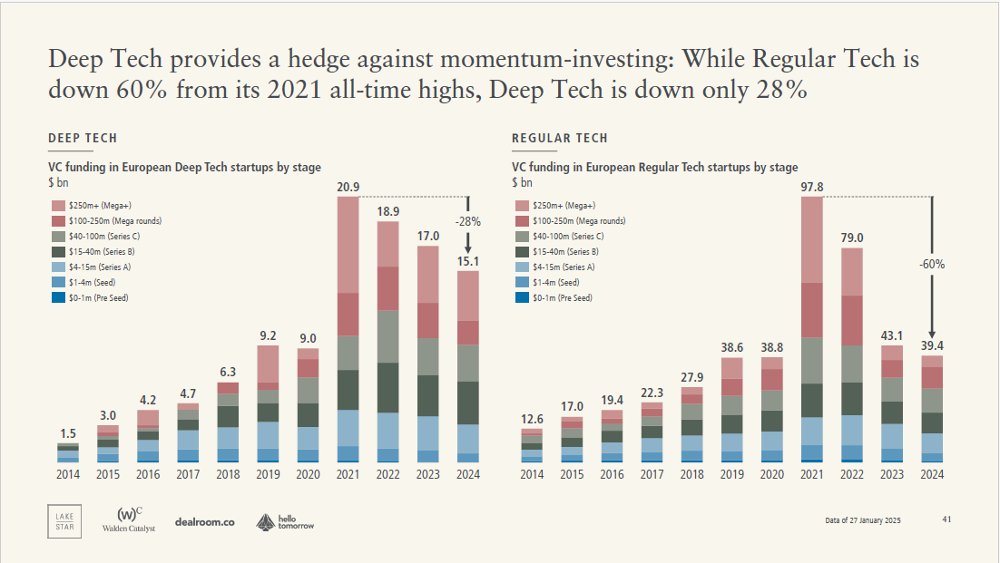
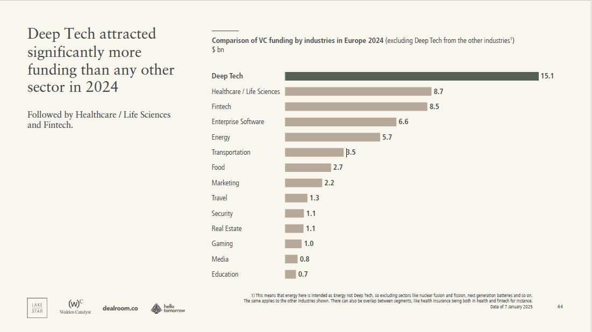
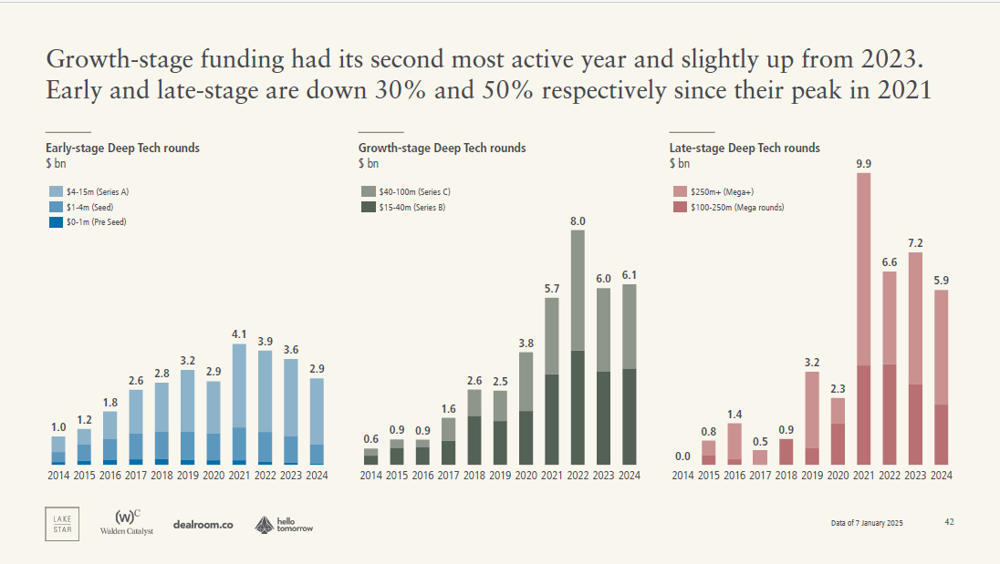

A Note from PocketVC Founder, Dan 💡
Welcome to PocketVC. I'm Dan, and like many of you, I'm captivated by Deep Tech. I started this blog to celebrate the world-changing work of startups and to unpack the excellent research being published, always looking for the overlooked insights.
This week, we are continuing our mini-series diving into the European Deep Tech ecosystem. Our insights are driven by the comprehensive data found in The 2025 European Deep Tech Report. Without the rigorous work of the report's creators Lakestar, Walden Catalyst, and dealroom.co this analysis would not be possible. Our goal is not just transcription. We take this high-level data and add a critical layer of commentary, interpreting what the trends truly signal for the future of Deep Tech investment.
Executive Summary: A Market in Disarray, an Asset Class that Endures
The last few years have brutally tested the European venture capital ecosystem. While the "Regular Tech" sector dominated by software and consumer applications has seen a massive correction, the Deep Tech segment has demonstrated remarkable resilience. This resilience is no accident; it is the predictable outcome of investments rooted in fundamental scientific and engineering breakthroughs, not merely market momentum.
The data from the 2025 European Deep Tech Report is clear: Deep Tech is a foundational asset class that is successfully hedging against the volatility that plagued momentum investing in 2023 and 2024.
I. The Deep Tech Hedge: Outperforming the Downturn
The most striking takeaway from the 2023-2024 funding cycle is the stark divergence in performance between Deep Tech (DT) and Regular Tech (RT) investments.
A. Diverging Valuations and Funding Total

Since the all-time highs of 2021, the market experienced a sharp contraction, yet Deep Tech's decline was dramatically shallower: Regular Tech (RT) Funding: Fell by 60% from its 2021 peak. Total VC funding in European Regular Tech startups was $97.8bn in 2021, dropping to $39.4bn in 2024. Deep Tech (DT) Funding: Fell by only 28% from its 2021 peak. Total VC funding in European Deep Tech startups was $20.9bn in 2021, dropping to $15.1bn in 2024. This disparity highlights a core thesis: Deep Tech's value is derived from intellectual property (IP) moats and fundamental technology, making it less susceptible to market sentiment shifts that often plague high-multiple, momentum-driven software companies. Furthermore, Deep Tech's share of total VC funding in Europe has dramatically increased. Since 2023, it has attracted a record share of capital, reaching 28% of all VC funding in both 2023 and 2024, a 2.5x increase in share over the last decade. This underscores a structural shift where complex, impactful solutions are becoming the preferred bet for patient capital. B. Sectoral Dominance in 2024
In 2024, Deep Tech attracted significantly more funding ($15.1bn) than any other sector in Europe. It surpassed traditional powerhouses like Healthcare/Life Sciences ($8.7bn) and Fintech ($8.5bn). This signal is unambiguous: Deep Tech is the single most dominant investment theme in Europe today. C. Valuation Stability: A Founder's North Star The report debunks the misconception that Deep Tech valuations are volatile. In fact, they exhibit stability that Regular Tech cannot match. Seed and Series B Stages: Deep Tech valuations have been steadily increasing, with the most significant rise at Seed ($23m in 2024) and Series B ($291m in 2024). Late-Stage (Series C+): While Regular Tech saw a significant decline in late-stage valuations from its 2021 peak, Deep Tech valuations remained relatively stable. For a Deep Tech founder, this signals a clearer, more predictable path to future rounds compared to the sudden valuation cliffs experienced by many RT peers. II. Dissecting the Funding Stages and Geography The resilience of Deep Tech funding masks critical differences across stages that every investor and entrepreneur must internalize. A. Early-Stage and Growth-Stage Resilience
Early-stage (Pre-Seed, Seed, Series A) funding is down by 30% and late-stage funding is down by 50% from the 2021 peak. However, Growth-Stage funding (Series B/C) had its second most active year and saw a slight increase from 2023. B. Country Performance: The Big Three The UK, France, and Germany continue to dominate European Deep Tech investment: UK: Attracted the most Deep Tech funding in 2024 ($4.2bn), growing by 21% year-over-year. France: Secured the second-most funding ($3.0bn), but showed the strongest slowdown among the big three, contracting by 27%. Germany: Attracted the third-most funding ($2.7bn), but showed strong growth at 37% year-over-year. C. Exit Landscape: Strong M&A, US Acquirers The overall value of European Deep Tech exits in 2024 was $12bn. M&A activity remains strong, but a persistent theme is the role of US acquirers in the largest outcomes: The two largest exits Darktrace ($5.3bn buyout) and Exscientia ($688m acquisition) were publicly listed Deep Tech firms ultimately acquired by US players (Thoma Bravo and Recursion Pharma, respectively). This confirms the ecosystem is generating valuable outcomes but highlights the need for stronger domestic exit channels to retain the long-term value created by European science. III. PocketVC's Opinion: The AI-Quantum Convergence The data presented above is compelling, but it only tells half the story. Some commentators suggest Deep Tech is simply "riding the wave" of geopolitical instability, especially given the rising investments in Resilience/Defense Tech (which saw funding double from last year). Others focus purely on the superior financial returns (Deep Tech funds often deliver higher average net Internal Rates of Return than traditional tech funds). However, I believe the resilience of Deep Tech isn't a political or a financial story alone it's a fundamental compute power story. We are currently seeing the advancement of AI unleash true compute power, with massive CapEx investments from tech titans driving innovation in hardware acceleration. But with Moore's Law coming to an end for traditional semiconductors, it's not long before AI and Quantum Computing blend together to make one hell of an advancement, leading us into the next generation of "compute." The convergence of AI's sophisticated algorithms with the exponential processing power of Quantum machines is inevitable. Will this shift happen in 2 years, 5 years, or 10 years? I'm unsure. But with quantum supremacy ever nearing, my best guess is that within five years, quantum computing will start to trickle into a variety of markets around the world. The VC firms and founders who are positioning themselves now at the intersection of AI, Deep Tech, and Future of Compute (especially in Quantum and Photonics) are not just hedging against market downturns; they are building the infrastructure for the next industrial revolution. The time to invest in these foundational technologies is now, before the trickle becomes a tidal wave.